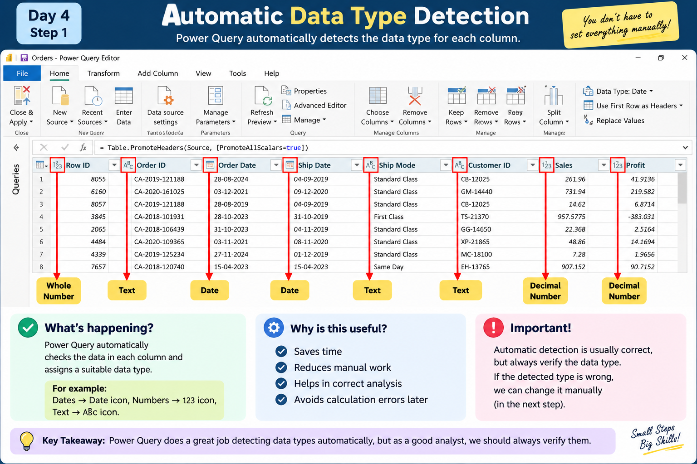
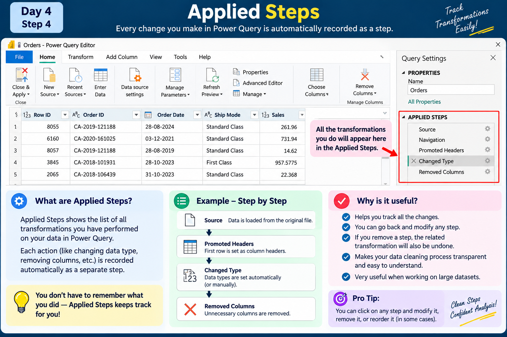
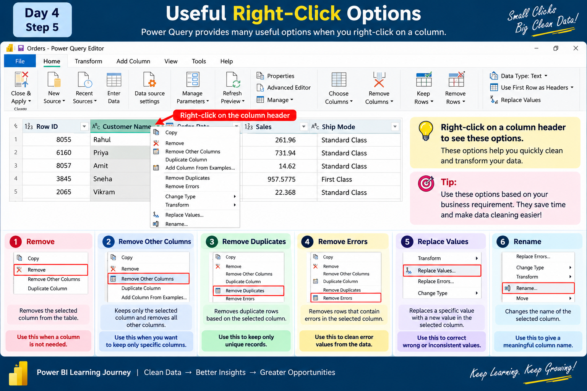

Basic Data Cleaning with Power Query
Data Power BI loki vachina tarvata, report build cheyyadaniki mundu data correct format lo undho verify cheyyali. Ee roju Power Query lo basic data cleaning concepts ni practical thinking tho nerchukundam.
🧠 Data Cleaning enduku important?
Real projects lo source data always perfect ga undadu. Data types wrong ga undachu, unnecessary columns undachu, duplicate records undachu, errors or inconsistent values undachu.
Important: Power Query data ni report/model ki ready cheyyadaniki use chese transformation layer. Cleaning ante random ga columns or values delete cheyyadam kaadu; business requirement ni understand chesi data ni prepare cheyyadam.
⭐ First and important thinking
Business requirement / question → Required data → Transformation → Analysis / Report
Example: Business asks, “Category and Product wise Sales entha?” appudu Category, Product and Sales columns relevant. Requirement ki use leni internal/code columns working query lo unnecessary ayithe remove cheyyachu.
Remember: Power Query lo column remove cheyyadam original Excel/database nunchi permanent ga delete cheyyadam kaadu. Adi query transformation.
Automatic Data Type Detection
Power Query data load chestunnappudu columns ki data types ni automatically detect cheyyadaniki try chestundi.
For example, date values ni Date ga, names ni Text ga, numbers ni Whole Number or Decimal Number ga detect cheyyachu.

Important: Automatic detection useful, but blindly trust cheyyakunda manam data types correct ga unnaya ani verify cheyyali.
Mana Orders data lo sensible types:
- Row ID → Whole Number
- Order ID → Text
- Order Date → Date
- Ship Date → Date
- Ship Mode → Text
- Customer ID → Text
- Customer Name → Text
Common Data Types
Verify the Detected Data Type
Column header daggara unna data type icon ni observe cheyyali. Data actual meaning ki match avutundha check cheyyali.

For example, Order Date actual ga date information represent chestundi. Kabatti adi Date data type lo undali.
Wrong ga Text ga detect ayithe, manam correct data type ki change cheyyali.
Change Type
Data type wrong ga detect ayithe, manam manually correct data type ki change cheyyachu.
Column select chesi Data Type dropdown nunchi required type select cheyyachu.
Example: Text ga unna date column actual date values represent chestunte, Change Type → Date select cheyyachu.

Applied Steps
Power Query Editor right side lo Applied Steps section untundi. Manam data meeda perform chesina transformations anni ikkada record avutayi.

- Source
- Promoted Headers
- Changed Type
- Removed Columns
- Other transformations
So, data ni step by step ela transform chesamo easy ga track cheyyachu.
Oka step ni revisit cheyyachu, modify cheyyachu, or unnecessary ayithe remove cheyyachu.
Remove Unwanted Columns — But Based on Requirement
Columns ni random ga remove cheyyakudadhu. Mundu “What question are we trying to answer?” ani ask cheskovali. Tarvata “What data do we need to answer it?” ani decide cheyyali.
Requirement ki use leni columns working query lo unnecessary ayithe remove cheyyachu.
Useful Right-Click Options
Column meeda right-click chesthe data ni transform cheyyadaniki different options kanipistayi. Manam requirement batti required option ni use cheyyali.

Important: Ee options anni blindly use cheyyakudadhu. Data and business requirement ni understand chesina tarvata use cheyyali.
💡 Today's Takeaway
- Power Query automatic ga data types detect cheyyagaladu, but analyst should verify them.
- Correct data types analysis and calculations ki important.
- Applied Steps transformations ni track and revisit cheyyadaniki useful.
- Columns ni business requirement/question base cheskoni remove or keep cheyyali.
- Right-click options ni purpose ardham cheskoni use cheyyali—not blindly.